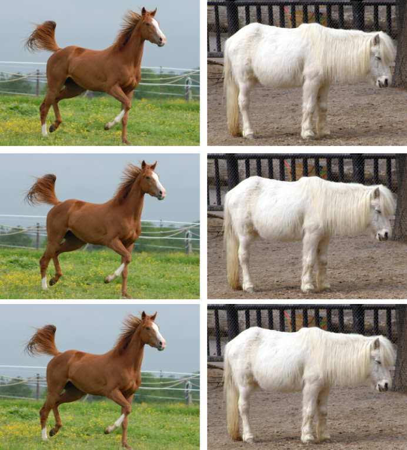
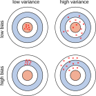
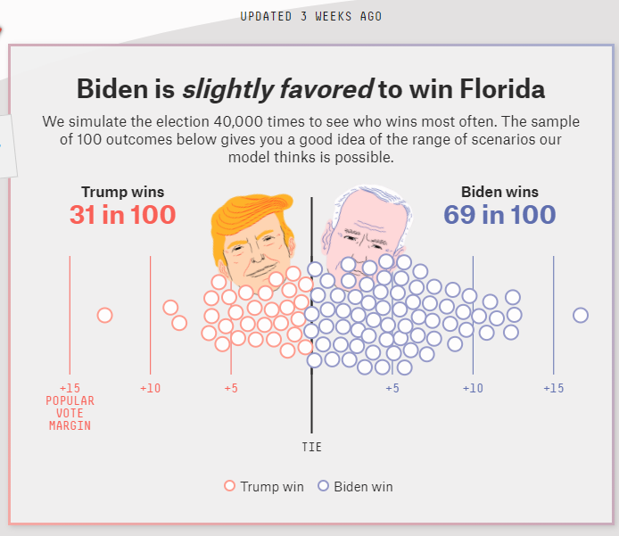
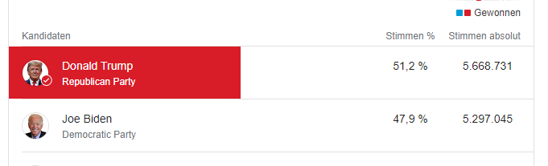

- In the section on performance indicators, we saw that there are different types of errors.
- There are also different reasons why machine learning models make errors.
- These reasons can lie in both the training data and the training process.
Next, we will look closer at these reasons.
- Bias of a model: Difference between its average prediction and the true value.
- Example
- We train a model to recognize cats and dogs in images.
- Cats appear much more frequently than dogs in the training dataset.
- As a result, the model is much more likely to predict "cat" than "dog".
- The model has a cat bias!

{kind=link}
Source dog image: Wikimedia Commons, CC BY.
{kind=link}
- Variance of a model: Spread of predictions for similar input observations.
- Example
- We train a model to recognize ponies and horses in images.
- Only brown horses and white ponies appear in the training data.
- The model memorizes the training data and learns to associate brown → horse and white → pony.
- The performance on new data with white horses and brown ponies is extremely poor.
Training Data

Unknown Data
{kind=link}
Source Brown Pony: Wikimedia Commons, CC BY-SA.
{kind=link}
Source White Horse: Wikimedia commons, CC BY.
{kind=link}
- In the context of machine learning, bias is also called underfitting:
- → the algorithm does not learn the relationships between attributes and outputs.
- Variance is also called overfitting:
- → the algorithm models false correlations or noise instead of the desired relationships between attributes and outputs.

Prediction for Florida 2020

Actual Result

Possible Sources of Error
- Bias: Attributes of respondents such as education or landline connection were not considered → the prediction systematically underestimates the number of Trump voters.
- Variance: Not enough people surveyed, the model learns the attributes of individual people → the prediction is strongly influenced by the random selection of respondents.
- Goal: Detect pneumonia in X-ray images of lungs.
- Training dataset: X-ray images from three hospitals.
- Incidence of pneumonia:
- Hospital 1: 1.2%
- Hospital 2: 34.2% <
- Hospital 3: 1.0%.
- The machine learning model receives both the images and the metadata (which hospital, which device, time, etc.) for training.
Possible Problems?
The model learns the source hospital of images, not how pneumonia looks like → Bias.
- Data Selection: Datasets should represent the underlying population.
- Prejudices and Correlations: Attributes can contain undesirable correlations that reflect prejudices.
- Missing Information: Attributes not included in the dataset can be very important for the result.
- Different Data Source: when the data source for the training data is different from the data used in the application.
Example: a facial recognition algorithm trained on images of predominantly white men that poorly recognizes black women.
Example: a recruiting algorithm that includes postal code and thus discriminates against migrants.
Example: Predicting customer willingness to buy. Customers from country X spend twice as much money as customers from country Y, but the country of origin is not collected and is not available for prediction.
Example: the training data for an image recognition algorithm is captured with a Nikon camera, all data for the application comes from Canon cameras.
In supervised learning, algorithms tend to "memorize" their training data.
→ the prediction error on the training data is not a good measure of variance!
Train-Test Approach
- Divide the data with known classes into two parts: the training dataset (e.g., 80% of the data) and the test dataset (e.g., 20% of the data).
- Train the model only with the training dataset.
- Predict the classes in the test dataset with the trained model.
- Compare the predicted classes with the true classes.
- (Optional) Separate a third part (validation data) to evaluate the model during development.
- Errors of machine learning models have two reasons:
- Bias: a systematic deviation of model predictions from the true value.
- Variance: a high spread of predictions for similar input values.
- Sources of bias and variance can lie in both the training data and the training process.
- Systematic identification of biases in training data helps to reduce model bias.
- Splitting data into training and test datasets helps prevent overfitting and correctly assess model performance.